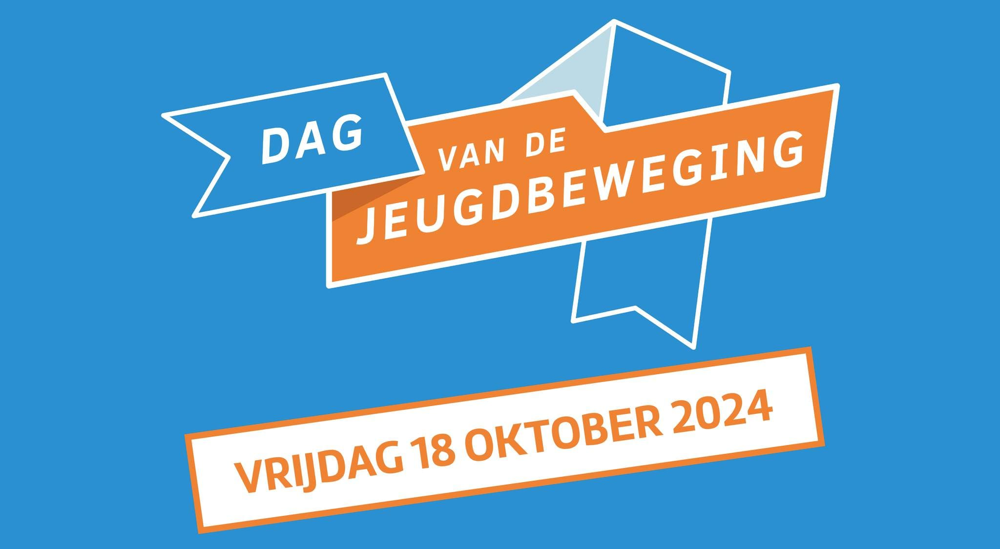
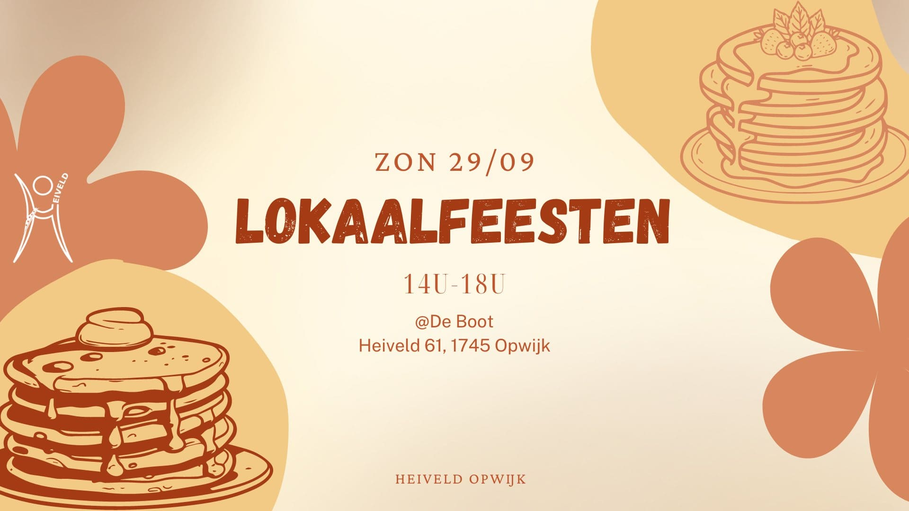
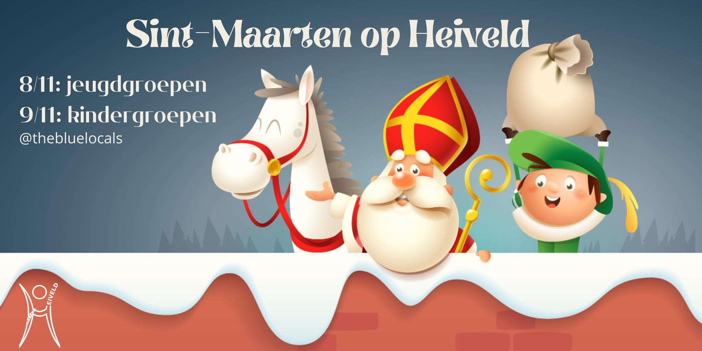
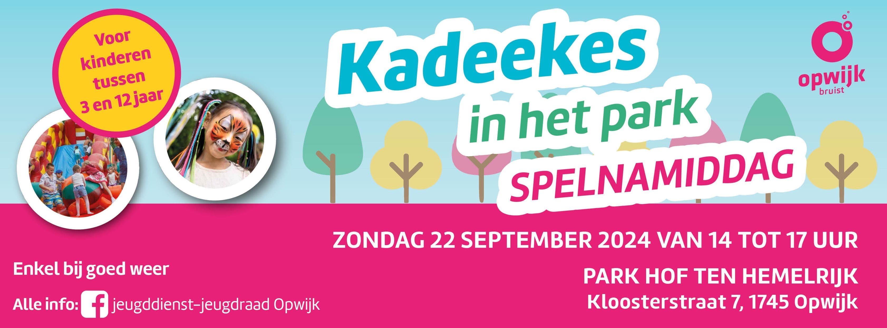
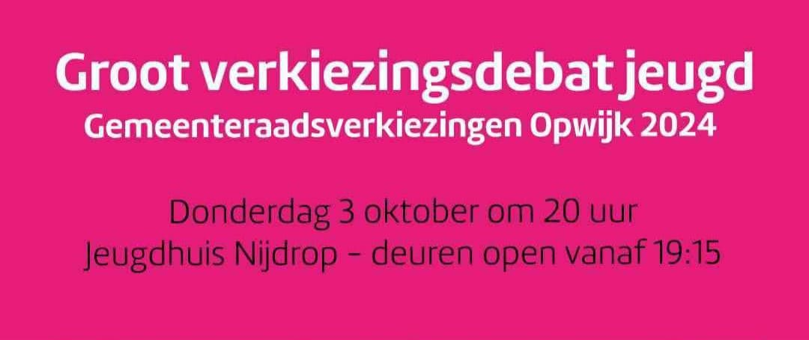
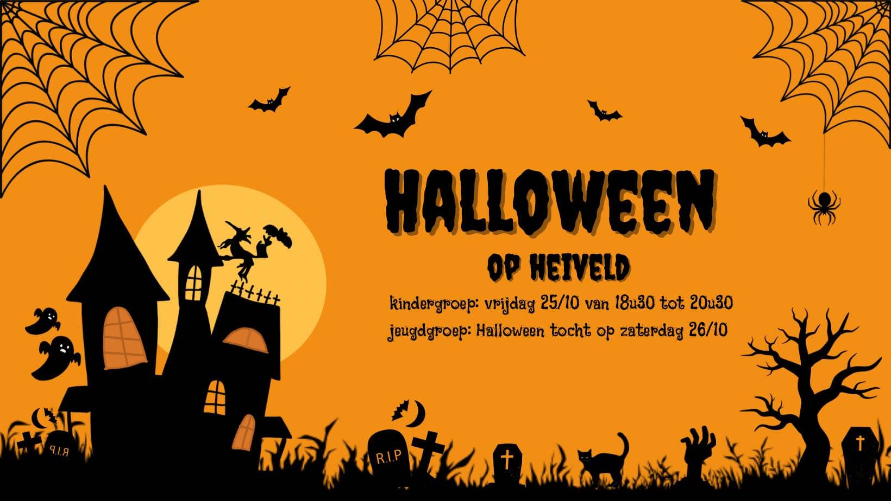

-
Let's Get Quizical
Na het grote succes van vorig jaar, geven we jullie de kans om ook dit jaar jullie kennis op de proef te stellen tijdens onze quiz: ‘Let’s get Quizical’? 🧠
Wil je jezelf bewijzen en laten zien wie de slimste is? Dan ben je welkom op zaterdag 22 februari om 20u in GBS De Boot voor onze legendarisch quiz!
Trommel al je vrienden op en vorm een team van max. 5 personen! Inschrijven kan je doen via deze link of via de QR code op de affiche.
Natuurlijk valt er ook nog iets te winnen, want de 3 beste teams kunnen een mooie prijs mee naar huis nemen!
Heb je nog vragen? Laat het ons gerust weten!
Hopelijk zien we jullie daar!
De leiding -

Dag van de Jeugdbeweging
Deze vrijdag, 18 oktober, is het Dag van de Jeugdbeweging! Dat betekent dat jullie in je heivelduniform naar school mogen!!
’s Avonds organiseert de gemeente een superleuke kinderfuif voor alle kindergroepen in de Nijdrop, van 18u30 tot 20u. Wij gaan daar natuurlijk ook naartoe! We verzamelen om 18u15 voor het gebouw van vrije tijd (achter de paaltjes die naar de binnenkoer van Hof Ten Hemelrijk leiden) in uniform en jullie kunnen om 20u hier weer opgehaald worden.
Jullie mogen ook een extra centje mee nemen voor iets te drinken, maar jullie krijgen ook een gratis drankje van de gemeente!
Voor de minder grote feestbeesten is er een rustige ruimte met strips om te lezen.
Hier nog even alles op een rijtje:- 💚 Kinderfuif op vrijdag 18 oktober van 18u15 tot 20u voor alle kindergroepen
- 💚 Geen werking voor de kindergroepen op zaterdag 19 oktober
- 💚 Werking van jeugdgroep 1 en 2 gaat gewoon door op vrijdag 18 oktober van 19u tot 21u aan de lokalen
Heiveldse groetjes,
De leiding -

Lokaalfeesten
Hey hey iedereen!
Zin in een lekker pannenkoekje? Geen probleem, want de Lokaalfeesten zijn weer van de partij!
Zoals elk jaar organiseert Heiveld Opwijk weer de iconische Lokaalfeesten waar iedereen welkom is om een lekkere pannenkoek 🥞 en/of ijsje🍦te eten.
- Waar? De Boot Heiveld 61, 1745 Opwijk
- Wanneer? Zondag 29 september, 14u-18u
Heb je die dag al iets te doen, geen probleem er zijn ook takeaway pannenkoeken 🥞 met de actie 10+1 gratis!
Kom ons zeker steunen!
Tot dan😊 -

De sint komt langs
🎶Zie ginds komt de stoomboot naar onze heiveld lokalen🎶
Zoals je misschien al doorhad komt Sint-Maarten op vrijdag 8 november en zaterdag 9 november onze blauwe lokalen een bezoekje brengen en misschien heeft hij wel iets lekkers mee. 🍫🍊
De werking van zaterdag 9 november zal deze week een halfuurtje langer duren en zal dus pas stoppen om 16u30.
Dus hopelijk zijn jullie braaf genoeg geweest en zien we jullie deze vrijdag of zaterdag aan de lokalen!
Veel Sint groetjes,
De leiding -

Kadeekes int park
Dag allemaal!
Deze week staat er al iets anders op de planning dan onze normale werking, het is ZONDAG 22 SEPTEMBER namelijk Kadeekes in’t Park in Hof ten Hemelrijk.
Wij gaan hier met Heiveld uiteraard ook naartoe! Daarom zal de werking voor de kindergroepen op zaterdag 21/09 NIET doorgaan en verplaatsen we deze naar zondag 22/09! We verzamelen hiervoor om 14u aan de speeltuin van Hof ten Hemelrijk in UNIFORM en mogen om 17u terug opgehaald worden. De werking zal dus voor 1 keer een uurtje langer duren!!
Voor de jeugdgroepers gaat de werking gewoon door op vrijdag 20/09.
Kindergroepen hebben dus GEEN werking op zaterdag 21/09!! -

Heiveld gaat in politiekdebat
Hallo allemaal,
Op zondag 13 oktober zijn het gemeenteverkiezingen en daarom organiseert de jeugdraad een groot verkiezingsdebat. Wil je graag meer informatie hebben over wat de verschillende partijen te zeggen hebben over het jeugdbeleid? Kom dan zeker eens langs op donderdag 3 oktober vanaf 19u15 in de Nijdrop!
Debatterende groetjes,
De leiding -

Halloween 25/10/2024
Dag allemaal! 🎃
Deze week vieren we Halloween op heiveld! De perfecte kans om je te verkleden in een bloeddorstige vampier, een griezelige heks, een ratelend skelet of een levenloze zombie!
De werking voor de kindergroepen zal doorgaan op vrijdag 25 oktober van 18u30 tot 20u30.
Jeugdgroep 1 en 2 gaan op zaterdag 26 oktober naar de Halloween tocht van Lebbeke en vertrekken om 19u met de fiets aan de lokalen.
Hopelijk kom jij ook mee griezelen, want wij kunnen al niet wachten!
De leiding -
Start werkjaar 2024-2025 + nadrink
Hey Hey
Een nieuw schooljaar gaat beginnen. Dat wil zeggen dat ook wij opnieuw werking zullen geven. Op vrijdag 7 september om 19u tot 21u is het voor de kinderen van het 1ste middelbaar tot het 5de middelbaar. Op zaterdag 7 september om 14u tot 16u is het voor de kinderen van het tweede kleuterklasje tot het 6de leerjaar. We zullen van start gaan aan onze blauwe lokalen in Opwijk. Maak jullie dus maar klaar voor een jaar vol toffe activiteiten en spelletjes. Wij kijken er alvast naar uit! We hopen jullie ook!
‼️Na onze eerste werking van de kindergroep op zaterdag 7 september nodigen wij alle ouders uit om nog even te blijven plakken samen met een drankje en een chipje. Op deze manier kunnen jullie ook direct kennismaken met de nieuwe leiding van jullie kinderen!
Tot dan!
Vele groetjes
De leiding
Bekijk de agenda!
Wil je weten wat er binnenkort op de planning staat? Kijk dan snel in onze agenda voor alle komende activiteiten en evenementen!